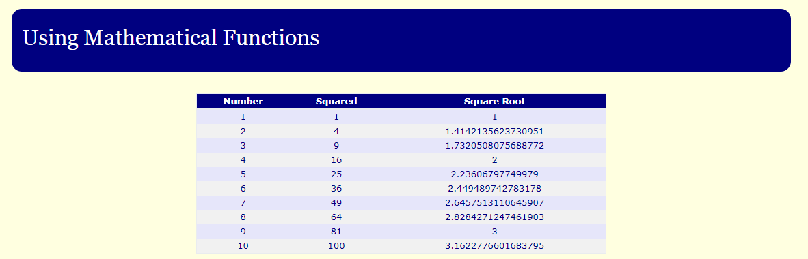

This lab will look at the various Date methods.
JavaScript includes a well developed Date class which provides methods to perform many different date manipulations.
The following lists some of the more useful methods for retrieving values from the Date object.
The following example retrieves todays date using the Date() object and extracts the full day, month, year and time using some of the methods listed above.
The following lists some of the more useful methods for setting values from the Date object.
Open the squares folder.
1 maths.html: You are given the template for a web page with a table in the sub folder. You are to add JavaScript code that will display the numbers from 1 to 10; the corresponding squared value; and the corresponding square root. For the squared and square root values use Mathematical Functions.

Return to the lab02 folder again.
Create web pages that include JavaScript code for each of the following and store them in the lab02 folder:
2 random.html: Write code that will generate and display a random number between 1 and 20.
3 date.html: Write JavaScript code that will output the following to the screen using the Date Functions: